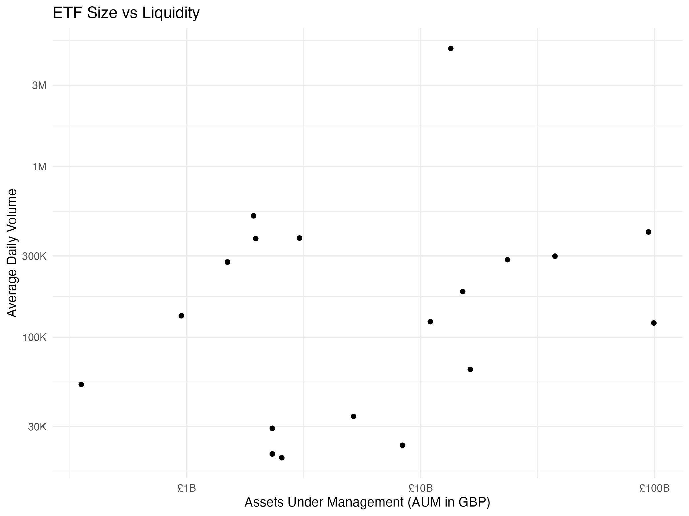

Metadata comes from the JustETF screener table (full universe), which includes fund size and TER for LSE-listed UCITS. The pipeline uses the screener result as the cached metadata snapshot.
In addition to the cached snapshot, we can query the JustETF screener directly to find ETFs meeting specific criteria (e.g., AUM > £200m, TER < 0.75%). Browser builds use the cached snapshot because cross-site requests are blocked by CORS. The snapshot is built from a curated ETF universe list and incremental Yahoo price downloads (only missing dates are fetched). See docs/wiki/ETF_Data_Sources.md for details.
We fetch daily price history from Yahoo Finance using quantmod. For the snapshot, we attempt a single download per ticker with a short timeout and store the results for use in WebR/Shinylive.
Show Code
fetch_price_history("VUSA.L")
Show Code
is_ci <-isTRUE(get0("is_ci", ifnotfound =FALSE))if (is_ci) {message("Skipping history plot in CI.")} elseif (data_loaded &&!is.null(history) &&requireNamespace("ggplot2", quietly =TRUE)) {# Visualize Close Prices with Facetsprint( history %>%ggplot(aes(x = date, y = close, color = ticker)) +geom_line() +facet_wrap(~ticker, scales ="free_y") +labs(title ="ETF Price History (LSE)", y ="Close Price (GBP)") +theme_minimal() +theme(legend.position ="none") )print(history)if (!is.null(history_summary)) {print(head(history_summary, 10)) }}
Combined Analysis
We join the datasets and parse the AUM strings to analyze the relationship between Fund Size, Liquidity, and Fees.
if (exists("combined") &&requireNamespace("ggplot2", quietly =TRUE)) {print(ggplot(combined, aes(x = total_amount, y = avg_daily_vol)) +geom_point() +scale_x_log10(labels = scales::label_currency(prefix ="£", scale_cut = scales::cut_short_scale())) +scale_y_log10(labels = scales::label_number(scale_cut = scales::cut_short_scale())) +labs(title ="ETF Size vs Liquidity",x ="Assets Under Management (AUM in GBP)",y ="Average Daily Volume") +theme_minimal() )}
Show Code
if (exists("combined") &&"ter_val"%in%colnames(combined) &&requireNamespace("ggplot2", quietly =TRUE)) {print(ggplot(combined, aes(x = total_amount, y = ter_val)) +geom_point() +scale_x_log10(labels = scales::label_currency(prefix ="£", scale_cut = scales::cut_short_scale())) +labs(title ="ETF Size vs Cost (TER)",x ="Assets Under Management (AUM in GBP)",y ="Total Expense Ratio (%)") +theme_minimal() )} elseif (exists("combined")) {print("TER data not available for plotting (ter_val column missing).")} else {print("Combined data not available for plotting.")}
[1] "Combined data not available for plotting."

Reproducibility & Metadata
Session Info
Click to expand Session Info
Show Code
sessionInfo()
R version 4.5.2 (2025-10-31)
Platform: aarch64-apple-darwin24.6.0
Running under: macOS Sequoia 15.7.1
Matrix products: default
BLAS: /nix/store/jammm5gz621n7dkzfzc1c43gs6xv9a10-blas-3/lib/libblas.dylib
LAPACK: /nix/store/30ypx3jnyq4r1z4nv742j1csfflsd66v-openblas-0.3.30/lib/libopenblasp-r0.3.30.dylib; LAPACK version 3.12.0
locale:
[1] en_US.UTF-8/en_US.UTF-8/en_US.UTF-8/C/en_US.UTF-8/en_US.UTF-8
time zone: Europe/Dublin
tzcode source: internal
attached base packages:
[1] stats graphics grDevices utils datasets methods base
loaded via a namespace (and not attached):
[1] htmlwidgets_1.6.4 compiler_4.5.2 fastmap_1.2.0 cli_3.6.5
[5] tools_4.5.2 htmltools_0.5.8.1 yaml_2.3.10 rmarkdown_2.30
[9] knitr_1.50 jsonlite_2.0.0 xfun_0.54 digest_0.6.37
[13] rlang_1.1.6 png_0.1-8 evaluate_1.0.5
Data Structures
Click to expand Data Structures
Show Code
if (data_loaded) {print("Universe:")print(head(universe, 10))print("Metadata:")print(head(metadata, 10))print("History:")print(head(history, 10))}